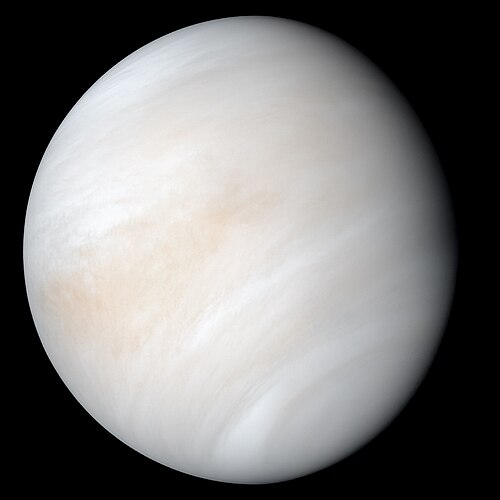
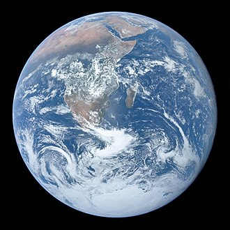
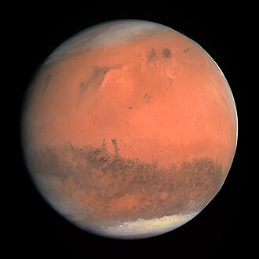

Орбита и вращение: 0.39 а.е. от Солнца, год — 88 суток. Захват 3:2 — за 2 оборота вокруг Солнца делает 3 оборота вокруг оси; солнечные сутки длятся ~176 земных суток. Эксцентриситет орбиты высокий (0.205). Размер и строение: диаметр 4 879 км (самый маленький из планет). Огромное железное ядро (более 50% радиуса), тонкая мантия и кора. Есть слабая магнитосфера (~1% земной). Атмосфера и температура: атмосферы почти нет (экзосфера из Na, K, Ca и др.). Перепады температур от ~−173°C ночью до ~+430°C днём. В полярных кратерах есть лёд в вечной тени. Поверхность: древняя, сильно кратерированная; крупнейший бассейн — Калорис. Видны гигантские «уступы-скарпы» — следы глобального сжатия при остывании. Исследования: Mariner 10 (1974–75), MESSENGER (2011–2015), BepiColombo (в пути; серия пролётов, ожидается выход на орбиту в 2025).
Орбита и вращение: 0.72 а.е.; год — 225 суток. Вращается очень медленно и ретроградно: сидерический день ~243 суток, солнечный ~117 суток. Ось наклонена на ~177° (почти «вверх ногами»). Атмосфера и климат: 96.5% CO2, ~3.5% N2; давление у поверхности ~92 атм. Температура ~+465°C почти везде из-за мощного парникового эффекта. Облака из серной кислоты на высотах ~45–70 км, сильная суперротация (ветры на вершинах облаков обегают планету за 4–5 дней). Поверхность и строение: вулканические равнины, «короны», купола, тессеры. Радарные данные указывают на недавний/активный вулканизм. Глобального магнитного поля нет. Исследования: советские «Венеры» (первые посадки), Magellan (радары, 1990-е), Venus Express (2006–2014), Akatsuki (с 2015). Планируются миссии DAVINCI, VERITAS, EnVision.
Орбита и вращение: 1 а.е.; год — 365.25 суток; наклон оси 23.44° — причина времён года. Солнечные сутки ~24 ч, сидерические — 23 ч 56 мин. Атмосфера, вода, жизнь: 78% N2, 21% O2; развитая магнитосфера и озоновый слой. 71% поверхности покрыто водой в жидком виде — ключевое условие жизни; активный углеродный цикл. Строение и динамика: ядро (внешнее жидкое — источник магнитного поля; внутреннее твёрдое), мантия и кора. Тектоника плит формирует горы, океаны, зоны субдукции. Единственный крупный спутник — Луна (стабилизирует ось, вызывает приливы).
Орбита и вращение: 1.52 а.е.; год — 687 суток. Наклон оси ~25° — выраженные сезоны. Солнечные сутки ~24 ч 37 мин. Атмосфера разрежённая: ~6–7 мбар. Атмосфера и климат: ~95% CO2, N2, Ar; крупные пылевые бури, иногда глобальные. Температуры в среднем ~−60°C (диапазон примерно от −125°C до +20°C). Много водяного льда в полярных шапках и под поверхностью. Поверхность и геология: самый высокий вулкан Солнечной системы — Олимп (≈22 км), плато Тарсис, гигантский каньон Валлес Маринерис (~4 000 км). Следы древних русел и озёр. Спутники и исследования: два маленьких спутника — Фобос и Деймос. На орбите и поверхности — целый «флот» миссий: Mars Express, MRO, MAVEN, TGO, ровер Curiosity (с 2012), Perseverance (с 2021, собирает образцы), и др.